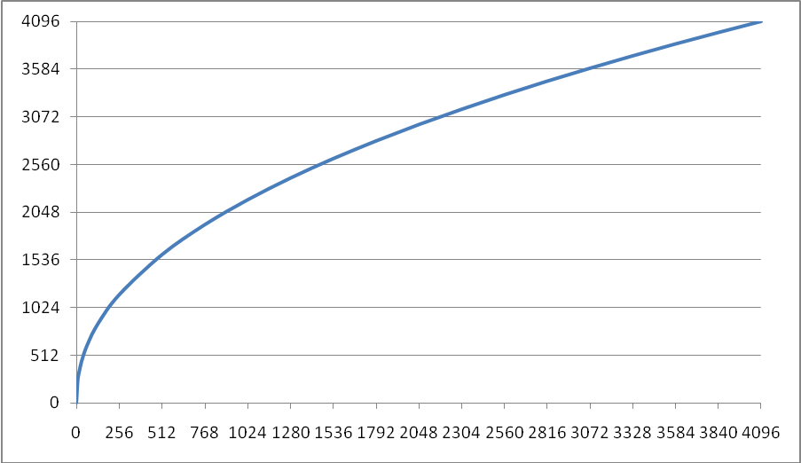
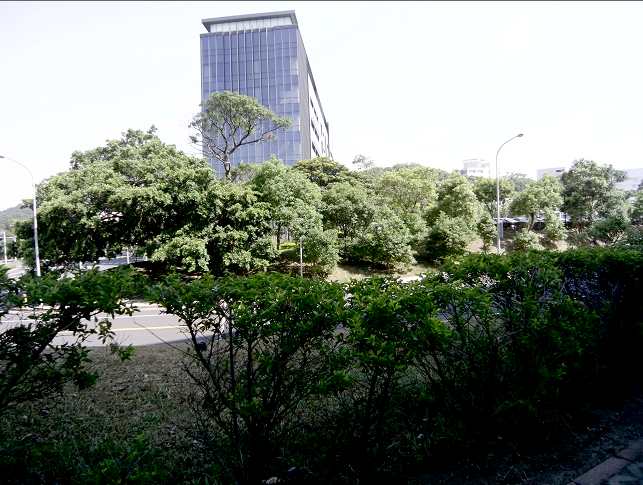
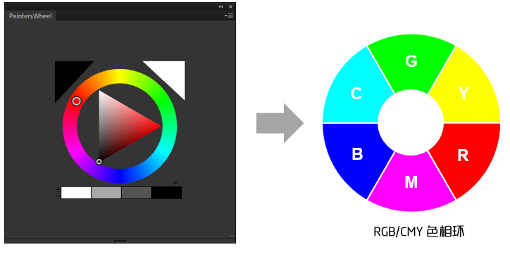
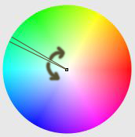
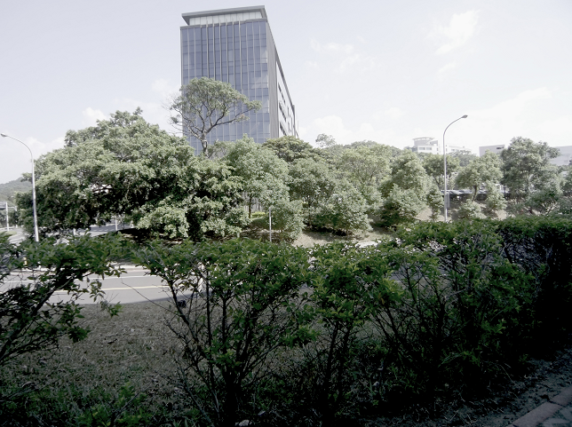
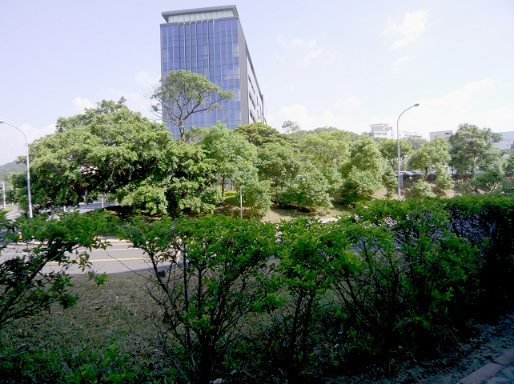
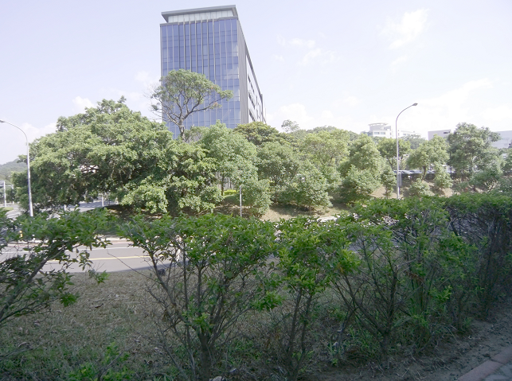
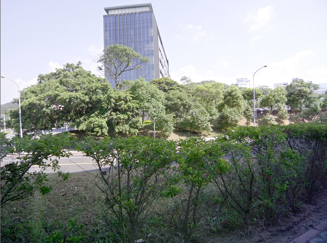
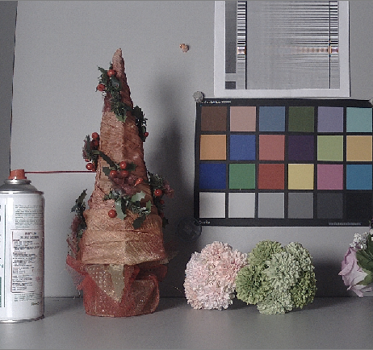
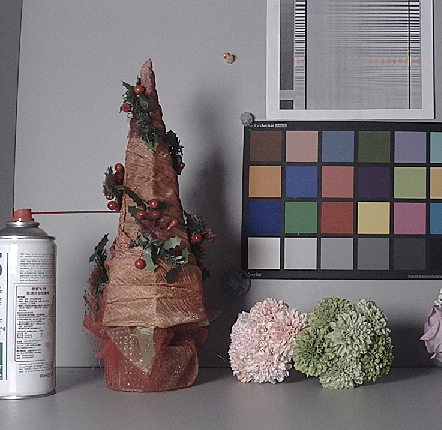

LCD IQ Tuning Guide
Overview¶
LCD310 is the LCD controller of NT9833x. The following image processing modules are insided.
- Y Gamma
- YUV Adjustment
- Local Contrast Enhance
- Sharpen
¶
IQ Tuning Guide¶
Y Gamma¶
This feature is tone mapping and can be used to adjust the contrast, brightness and dynamic range of the image.
Parameters¶
LCD310 Y Gamma divides the Y channel range from the darkest to the brightest and is equally divided into 16 blocks. Each block can be divided into up to 8 sub-blocks. The total number of all blocks must not exceed 32.

| Parameter | Range | Def | Description |
|---|---|---|---|
| gm_en | 0\~1 | 1 | enable Y gamma |
| blk_idx[16] | 0\~31 | 0 | Block first index |
| blk_split[16] | 0\~3 | 0 | Block[x], Sub-block split 00 : no split. 01 : split to 2 sub-blocks 10 : split to 4 sub-blocks 11 : split to 8-blocks |
| Y_gm[32] | 0\~4095 | Gamma table |
- gm_en: Y gamma enable/disable
- blk_idx: Sub-block index in each macro block. Corresponds to the index of the gamma table.
- blk_split: Each block is divided into sub-blocks.
Ex. 1：
Block0 is divided into 8 sub-block
Block1 is divided into 8 sub-block
Block2 is divided into 8 sub-block
Block3 is divided into 8 sub-block
Total Block no:
8 + 8 + 2 + 2 + 12(Block4\~15)
= 32
The parameter settings are as follows：
blk_idx[16] = {0, 8, 16, 18, 20, 21, 22, 23, 24, 25, 26, 27, 28, 29, 30, 31};
blk_split[16] = {3, 3, 1, 1, 0, 0, 0, 0, 0, 0, 0, 0, 0, 0, 0, 0, 0};
Y_gm[32] = {32, 64, 96, 128, 160, 192, 224, 256, 288, 320, 352, 384, 416, 448, 480, 512, 640, 768, 896, 1024, 1280, 1536, 1792, 2048, 2304, 2560, 2816, 3072, 3328, 3584, 3840, 4095};
Ex. 2：
Block0 is divided into 4 sub-block
Block1 is divided into 4 sub-block
Block14 is divided into 4 sub-block
Block15 is divided into 4 sub-block
Total block no:
4 + 4 + 12(Block2\~13) + 4 + 4
= 28 //※not necessary to equal to 32
The parameter settings are as follows：
blk_idx[16] = {0, 4, 8, 9, 10, 11, 12, 13, 14, 15, 16, 17, 18, 19, 20, 24};
blk_split[16] = {2, 2, 0, 0, 0, 0, 0, 0, 0, 0, 0, 0, 0, 0, 0, 2, 2};
Y_gm[32] = {64, 128, 192, 256,320, 384, 448, 512, 768, 1024, 1280, 1536, 1792, 2048, 2304, 2560, 2816, 3072, 3328, 3584, 3648, 3712, 3776, 3840, 3904, 3968, 4032, 4095, 4095, 4095, 4095, 4095}; ※The last for value will be dummy.
Tuning Interface¶
Proc Command:¶
echo 0 1 0 “0x300,0x108,0x10a,0xc,0xd,0xe,0xf,0x10,0x11,0x12,0x13,0x14,0x15,0x116,0x218,0x21c” > ygamma
echo 0 1 1 “80,128,176,224,256,304,336,368,528,688,832,1008,1344,1680,2016,2336” > ygamma
echo 0 1 2 “2640,2912,3152,3376,3552,3712,3776,3840,3872,3904,3936,3968,4000,4032,4064,4080” > ygamma
YUV Adjustment¶
This function includes adjustments for brightness, contrast, hue, saturation, etc., as follows:
- Brightness:
-
Setting Interface： proc
Read : cat /proc/flcd310/brightness
Write: echo \<plane 0> \<brightness -127\~127> > brightness
-
| Parameter | Description |
|---|---|
| plane | Image plane. Fixed to be 0 (Video plane) |
| brightness | Brightness value. The larger value corressponds to brighter image. |
- Result：
| Brightness = 0 | |
|---|---|
| Brightness = 25 | |
| Brightness = -25 |
- Contrast: Map the image Y channel to adjust the image contrast.
-
Setting Interface： /proc/flcd310/contrast
Read: cat /proc/flcd310/contrast
Write: echo \<plane 0\~0> \<contrast_ratio 0\~255> \<contrast_mode 0\~2> > /proc/flcd310/contrast
-
| Parameter | Description |
|---|---|
| plane | Image plane. Fixed to be 0 (Video plane) |
| contrast_ratio | Default = 128, The lager value corressponds to higher contrast. |
| contrast_mode | Mapping mode, explained as following: |
| contrast_mode | mapping mode (contrast=150) | Feature |
|---|---|---|
| 0 | No loss of shadow details, loss of highlight detail Overall brightness may increase. | |
| 1 | Dark details and highlight details are likely to be loss. Overall brightness will not be changed. | |
| 2 | No loss of detail in the highlights, details of the shadows and possible loss. The overall brightness may be dimmed. |
- Result：
| contrast = 170 |  |
|---|---|
| Contrast = 80 |
-
Hue:
LCD310 divides the color picture into six blocks, which can adjust the hue and saturation for specific color blocks.
Index 0 \~ 5 respectively: Magenta, Red, Yellow, Green, Cyan, Blue.

-
Setting Interface: /proc/flcd310/hue
Read: cat /proc/flcd310/hue
Write: echo \<plane 0\~0> \<hue_sat state 0/1> \<hue0 -45\~45> \<hue1 -45\~45> \<hue2 -45\~45> \<hue3 -45\~45> \<hue4 -45\~45> \<hue5 -45\~45> > /proc/flcd310/hue
| Parameter | Description |
|---|---|
| plane | Image plane. Fixed to be 0 (Video plane) |
| hue_sat state | 1: enable, 0: diable hue saturation |
| hue0\~5 | They are the rotation adjustment values of the following 6 large hue blocks. The preset value of 0 means no adjustment, and the positive/negative values are respectively inverse/clockwise rotation of the hue block. Magenta, Red, Yellow, Green, Cyan, Blue |
-
Saturation: Adjust the saturation of the picture.
LCD310 divides the color picture into six blocks, which can adjust the hue and saturation for specific color blocks.
Index 0 \~ 5 respectively: Magenta, Red, Yellow, Green, Cyan, Blue.

-
Setting Interface： /proc/flcd310/hue_sat
Read: cat /proc/flcd310/hue_sat
Write: echo \<plane 0\~0> \<hue_sat state 0/1> \<hue_sat0> \<hue_sat1> \<hue_sat2> \<hue_sat3> \<hue_sat4> \<hue_sat5> > /proc/flcd310/hue_sat
| Parameter | Description |
|---|---|
| plane | Image plane. Fixed to be 0 (Video plane) |
| hue_sat state | 1: enable, 0: diable hue saturation |
| hue_sat0\~5 | The saturation adjustment values of the following six color. Set to 128 to indicate no adjustment. The larger the value, the higher the saturation. Magenta, Red, Yellow, Green, Cyan, Blue |
- Result：
| hue_sat = 64 |  |
|---|---|
| hue_sat = 128 | |
| hue_sat=164 |  |
Local Contrast Enhance¶
This feature enhances regional contrast.
Setting Interface： /proc/flcd310/ce
Read: cat /proc/flcd310/ce
Write: echo \<plane 0\~0> \<ce_state 0/1> \<strength 0\~1023> > /proc/flcd310/ ce
| Parameter | Description |
|---|---|
| plane | Image plane. Fixed to be 0 (Video plane) |
| ce_state | 1: enable, 0: diable |
| strength | The strength of local contrast enhancement. |
- Result：
| strength = 0 |  |
|---|---|
| strength = 30 |  |
Sharpen¶
This function is an edge enhancement function that enhances the sharpness of the picture. Two-level sharpness enhancement core for reinforcement of thin and thick edges
-
Setting Interface: /proc/flcd310/sharpness
Read: cat /proc/flcd310/sharpness
Write: echo \<plane 0> \<enable 0/1> \<hpf0_5x5_gain 0\~1024> \<hpf1_5x5_gain 0\~1024> > /proc/flcd310/sharpness
| Parameter | Description |
|---|---|
| plane | Image plane. Fixed to be 0 (Video plane) |
| enable | 1: enable, 0: diable |
| hpf0_5x5_gain | Enhance strength of thick edge. |
| hpf1_5x5_gain | Enhance strength of thin edge. |
- Result：
| Thin edge enhancement |  |
|---|---|
| Thick edge enhancement |  |
Revision Historys¶
| Revision | Date | Author | Changes |
|---|---|---|---|
| 0.1.0 | 2021/01/20 | Allen Hsu | First version. |